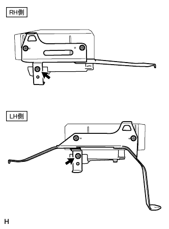
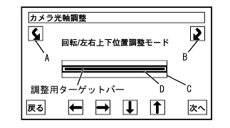
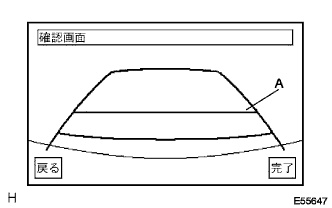

テレビジョン カメラ コントローラ 取り付け |
| 1. テレビジョン カメラ コントローラ取り付け |
|  |
| 2. ナビゲーションコンピュータ W/ブラケット取り付け |
コネクタを接続し、ボルト3本でナビゲーションコンピュータ Ｗ／ブラケットを取り付ける。
| 3. ナビゲーションコンピュータ カバー取り付け |
クリップ2個でナビゲーションコンピュータ カバーを取り付ける。
| 4. フロントシートASSY RH取り付け |
シートトラックアジャスティングハンドルを操作してフロントシートASSYをスライドさせ、フロントモーストにする。
シートASSYを車両に乗せ、フロントシートレッグASSY RH部のピンと車両側の穴を合わせる。
車両側ワイヤハーネスとシート側ワイヤハーネスを接続させる。
ボルト2本でシートASSYのリヤ側を仮締めする。
シートトラックアジャスティングハンドルを操作してフロントシートASSYをスライドさせ、リヤモーストにする。
ボルト2本でシートASSYのフロント側を仮締めする。
シートトラックアジャスティングハンドルを操作してフロントシートASSYをスライドさせ、フロントモーストにする。
シートASSYのリヤ側のボルト2本ををインナ→アウタの順に締め付ける。
シートトラックアジャスティングハンドルを操作してフロントシートASSYをスライドさせ、リヤモーストにする。
シートASSYのフロント側のボルト2本をインナ→アウタの順に締め付ける。
フロントシートレッグカバーのツメをかん合させる。
| 5. バッテリーマイナスターミナル接続 |
| 6. 舵角中立点と最大舵角の点検·調整 |
参照)| 7. テレビジョンカメラASSY光軸調整 |
|  |
回転スイッチA、Bを押してCを回転させ、調整用ターゲットバーと平行になるようにする。
上下左右スイッチを押してCを上下左右に移動させ、調整用ターゲットバーがDの中心に入るようにする。
“次へ”を選択する
|  |
A(バンパー端から[1210mm]先を示す)と調整用ターゲットバーがほぼ重なっていることを確認する。また、ステアリングが直進状態のとき、予想進路がまっすぐ(車幅延長線と重なっている)であることを確認する。
完了を選択し、ダイアグ検査メニューに戻り調整終了。
| 8. バッテリーターミナル脱着時の初期化 |
バッテリー端子の脱着、ステアリングセンサのコネクタ脱着等により、画面に“システム初期化中”の表示がされた場合、以下のいずれかの操作を行い舵角中立点のずれを修正する。
方法1:左右両側にステアリングホイールをいっぱいに切ると舵角中立点が修正される。
方法2:できるだけ曲り角、カーブ、渋滞の少ない状況で、車速20km/h以上および5分間以上走行する。